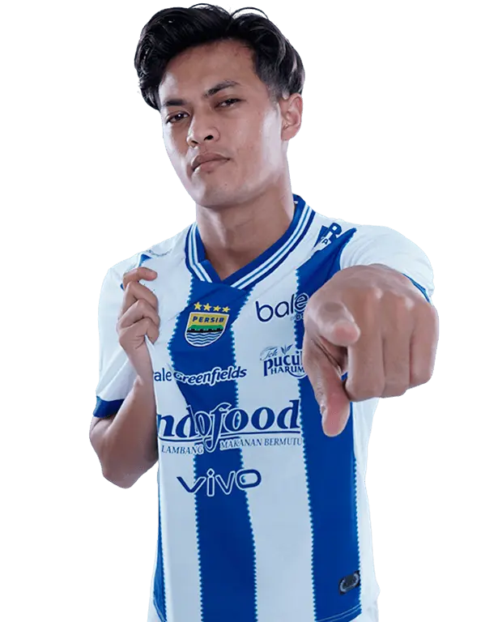

 Persib Bandung
Persib Bandung
Dewangga
- Nama Lengkap: Alfeandra Dewangga
- Tanggal Lahir: 28 Juni 2001 (Semarang, Indonesia)
- Posisi: Bek Tengah / Bek Kiri
- Nomor: 19
- Bergabung Klub: PSIS Semarang (2019–2024)
- Bergabung Klub: Persib Bandung (2024-Sekarang)
- Status: Pemain Timnas Indonesia
Karier Sepak Bola
- PSIS Semarang (2019–2024)
- Persib Bandung (2024-Sekarang)
- Timnas Indonesia U-23
- Timnas Senior Indonesia
Statistik
-
Penampilan Klub
-
Gol Dicetak
35
Caps Timnas
87%
Akurasi Operan
Riwayat Cedera
- 2022 – Cedera engkel ringan (absen ±2 minggu)
Prestasi
- Finalis Piala AFF bersama Timnas Indonesia (2020, 2022)
- Medali Perunggu SEA Games 2021 bersama Timnas U-23
- Pemain muda andalan PSIS Semarang di Liga 1
Bio Singkat
Dewangga adalah bek muda berbakat asal Semarang yang dikenal dengan disiplin, kecepatan, dan fleksibilitas bermain sebagai bek tengah maupun bek kiri. Ia menjadi bagian penting PSIS Semarang sekaligus pilar pertahanan Timnas Indonesia. Dengan kemampuan duel udara, umpan akurat, serta mentalitas tangguh, Dewangga diprediksi menjadi salah satu bek masa depan terbaik Indonesia.